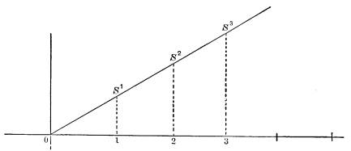
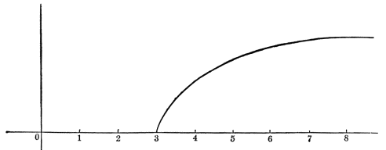

Chapter 2: Sensation in General¶
2.1 Sensation in General¶
Incoming nerve-currents are the only agents which normally affect the brain. The human nerve-centres are surrounded by many dense wrappings of which the effect is to protect them from the direct action of the forces of the outer world. The hair, the thick skin of the scalp, the skull, and two membranes at least, one of them a tough one, surround the brain; and this organ moreover, like the spinal cord, is bathed by a serous fluid in which it floats suspended. Under these circumstances the only things that can happen to the brain are:
1) The dullest and feeblest mechanical jars;
2) Changes in the quantity and quality of the blood-supply; and
3) Currents running in through the so-called afferent or centripetal nerves.
The mechanical jars are usually ineffective; the effects of the blood-changes are usually transient; the nerve-currents, on the contrary, produce consequences of the most vital sort, both at the moment of their arrival, and later, through the invisible paths of escape which they plough in the substance of the organ and which, as we believe, remain as more or less permanent features of its structure, modifying its action throughout all future time.
Each afferent nerve comes from a determinate part of the periphery and is played upon and excited to its inward activity by a particular force of the outer world. Usually it is insensible to other forces: thus the optic nerves are not impressible by air-waves, nor those of the skin by light-waves. The lingual nerve is not excited by aromatic effluvia, the auditory nerve is unaffected by heat. Each selects from the vibrations of the outer world some one rate to which it responds exclusively. The result is that our sensations form a discontinuous series, broken by enormous gaps. There is no reason to suppose that the order of vibrations in the outer world is anything like as interrupted as the order of our sensations. Between the quickest audible air-waves (40,000 vibrations a second at the outside) and the slowest sensible heat-waves (which number probably billions), Nature must somewhere have realized innumerable intermediary rates which we have no nerves for perceiving. The process in the nerve-fibres themselves is very likely the same, or much the same, in all the different nerves. It is the so-called 'current'; but the current is started by one order of outer vibrations in the retina, and in the ear, for example, by another. This is due to the different terminal organs with which the several afferent nerves are armed. Just as we arm ourselves with a spoon to pick up soup, and with a fork to pick up meat, so our nerve-fibres arm themselves with one sort of end-apparatus to pick up air-waves, with another to pick up ether-waves. The terminal apparatus always consists of modified epithelial cells with which the fibre is continuous. The fibre itself is not directly excitable by the outer agent which impresses the terminal organ. The optic fibres are unmoved by the direct rays of the sun; a cutaneous nerve-trunk may be touched with ice without feeling cold.1 The fibres are mere transmitters; the terminal organs are so many imperfect telephones into which the material world speaks, and each of which takes up but a portion of what it says; the brain-cells at the fibres' central end are as many others at which the mind listens to the far-off call.
The 'Specific Energies' of the Various Parts of the Brain.—To a certain extent anatomists have traced definitely the paths which the sensory nerve-fibres follow after their entrance into the centres, as far as their termination in the gray matter of the cerebral convolutions.2 It will be shown on a later page that the consciousness which accompanies the excitement of this gray matter varies from one portion of it to another. It is consciousness of things seen, when the occipital lobes, and of things heard, when the upper part of the temporal lobes, share in the excitement. Each region of the cerebral cortex responds to the stimulation which its afferent fibres bring to it, in a manner with which a peculiar quality of feeling seems invariably correlated. This is what has been called the law of 'specific energies' in the nervous system. Of course we are without even a conjectural explanation of the ground of such a law. Psychologists (as Lewes, Wundt, Rosenthal, Goldscheider, etc.) have debated a good deal as to whether the specific quality of the feeling depends solely on the place stimulated in the cortex, or on the sort of current which the nerve pours in. Doubtless the sort of outer force habitually impinging on the end-organ gradually modifies the end-organ, the sort of commotion received from the end-organ modifies the fibre, and the sort of current a so-modified fibre pours into the cortical centre modifies the centre. The modification of the centre in turn (though no man can guess how or why) seems to modify the resultant consciousness. But these adaptive modifications must be excessively slow; and as matters actually stand in any adult individual, it is safe to say that, more than anything else, the place excited in his cortex decides what kind of thing he shall feel. Whether we press the retina, or prick, cut, pinch, or galvanize the living optic nerve, the Subject always feels flashes of light, since the ultimate result of our operations is to stimulate the cortex of his occipital region. Our habitual ways of feeling outer things thus depend on which convolutions happen to be connected with the particular end-organs which those things impress. We see the sunshine and the fire, simply because the only peripheral end-organ susceptible of taking up the ether-waves which these objects radiate excites those particular fibres which run to the centres of sight. If we could interchange the inward connections, we should feel the world in altogether new ways. If, for instance, we could splice the outer extremity of our optic nerves to our ears, and that of our auditory nerves to our eyes, we should hear the lightning and see the thunder, see the symphony and hear the conductor's movements. Such hypotheses as these form a good training for neophytes in the idealistic philosophy!
Sensation distinguished from Perception.—It is impossible rigorously to define a sensation; and in the actual life of consciousness sensations, popularly so called, and perceptions merge into each other by insensible degrees. All we can say is that what we mean by sensations are FIRST things in the way of consciousness. They are the immediate results upon consciousness of nerve-currents as they enter the brain, and before they have awakened any suggestions or associations with past experience. But it is obvious that such immediate sensations can only be realized in the earliest days of life. They are all but impossible to adults with memories and stores of associations acquired. Prior to all impressions on sense-organs, the brain is plunged in deep sleep and consciousness is practically non-existent. Even the first weeks after birth are passed in almost unbroken sleep by human infants. It takes a strong message from the sense-organs to break this slumber. In a new-born brain this gives rise to an absolutely pure sensation. But the experience leaves its 'unimaginable touch' on the matter of the convolutions, and the next impression which a sense-organ transmits produces a cerebral reaction in which the awakened vestige of the last impression plays its part. Another sort of feeling and a higher grade of cognition are the consequence. 'Ideas' about the object mingle with the awareness of its mere sensible presence, we name it, class it, compare it, utter propositions concerning it, and the complication of the possible consciousness which an incoming current may arouse, goes on increasing to the end of life. In general, this higher consciousness about things is called Perception, the mere inarticulate feeling of their presence is Sensation, so far as we have it at all. To some degree we seem able to lapse into this inarticulate feeling at moments when our attention is entirely dispersed.
Sensations are cognitive. A sensation is thus an abstraction seldom realized by itself; and the object which a sensation knows is an abstract object which cannot exist alone. 'Sensible qualities' are the objects of sensation. The sensations of the eye are aware of the colors of things, those of the ear are acquainted with their sounds; those of the skin feel their tangible heaviness, sharpness, warmth or coldness, etc., etc. From all the organs of the body currents may come which reveal to us the quality of pain, and to a certain extent that of pleasure.
Such qualities as stickiness, roughness, etc., are supposed to be felt through the coöperation of muscular sensations with those of the skin. The geometrical qualities of things, on the other hand, their shapes, bignesses, distances, etc. (so far as we discriminate and identify them), are by most psychologists supposed to be impossible without the evocation of memories from the past; and the cognition of these attributes is thus considered to exceed the power of sensation pure and simple.
'Knowledge of Acquaintance' and 'Knowledge about.'—Sensation, thus considered, differs from perception only in the extreme simplicity of its object or content. Its object, being a simple quality, is sensibly homogeneous; and its function is that of mere acquaintance with this homogeneous seeming fact. Perception's function, on the other hand, is that of knowing something about the fact. But we must know what fact we mean, all the while, and the various whats are what sensations give. Our earliest thoughts are almost exclusively sensational. They give us a set of whats, or thats, or its; of subjects of discourse in other words, with their relations not yet brought out. The first time we see light, in Condillac's phrase we are it rather than see it. But all our later optical knowledge is about what this experience gives. And though we were struck blind from that first moment, our scholarship in the subject would lack no essential feature so long as our memory remained. In training-institutions for the blind they teach the pupils as much about light as in ordinary schools. Reflection, refraction, the spectrum, the ether-theory, etc., are all studied. But the best taught born-blind pupil of such an establishment yet lacks a knowledge which the least instructed seeing baby has. They can never show him what light is in its 'first intention'; and the loss of that sensible knowledge no book-learning can replace. All this is so obvious that we usually find sensation 'postulated' as an element of experience, even by those philosophers who are least inclined to make much of its importance, or to pay respect to the knowledge which it brings.
Sensations distinguished from Images.—Both sensation and perception, for all their difference, are yet alike in that their objects appear vivid, lively, and present. Objects merely thought of, recollected, or imagined, on the contrary, are relatively faint and devoid of this pungency, or tang, this quality of real presence which the objects of sensation possess. Now the cortical brain-processes to which sensations are attached are due to incoming currents from the periphery of the body—an external object must excite the eye, ear, etc., before the sensation comes. Those cortical processes, on the other hand, to which mere ideas or images are attached are due in all probability to currents from other convolutions. It would seem, then, that the currents from the periphery normally awaken a kind of brain-activity which the currents from other convolutions are inadequate to arouse. To this sort of activity—a profounder degree of disintegration, perhaps—the quality of vividness, presence, or reality in the object of the resultant consciousness seems correlated.
The Exteriority of Objects of Sensation.—Every thing or quality felt is felt in outer space. It is impossible to conceive a brightness or a color otherwise than as extended and outside of the body. Sounds also appear in space. Contacts are against the body's surface; and pains always occupy some organ. An opinion which has had much currency in psychology is that sensible qualities are first apprehended as in the mind itself, and then 'projected' from it, or 'extradited,' by a secondary intellectual or super-sensational mental act. There is no ground whatever for this opinion. The only facts which even seem to make for it can be much better explained in another way, as we shall see later on. The very first sensation which an infant gets is for him the outer universe. And the universe which he comes to know in later life is nothing but an amplification of that first simple germ which, by accretion on the one hand and intussusception on the other, has grown so big and complex and articulate that its first estate is unrememberable. In his dumb awakening to the consciousness of something there, a mere this as yet (or something for which even the term this would perhaps be too discriminative, and the intellectual acknowledgment of which would be better expressed by the bare interjection 'lo!'), the infant encounters an object in which (though it be given in a pure sensation) all the 'categories of the understanding' are contained. It has externality, objectivity, unity, substantiality, causality, in the full sense in which any later object or system of objects has these things. Here the young knower meets and greets his world; and the miracle of knowledge bursts forth, as Voltaire says, as much in the infant's lowest sensation as in the highest achievement of a Newton's brain.
The physiological condition of this first sensible experience is probably many nerve-currents coming in from various peripheral organs at once; but this multitude of organic conditions does not prevent the consciousness from being one consciousness. We shall see as we go on that it can be one consciousness, even though it be due to the coöperation of numerous organs and be a consciousness of many things together. The Object which the numerous inpouring currents of the baby bring to his consciousness is one big blooming buzzing Confusion. That Confusion is the baby's universe; and the universe of all of us is still to a great extent such a Confusion, potentially resolvable, and demanding to be resolved, but not yet actually resolved, into parts. It appears from first to last as a space-occupying thing. So far as it is unanalyzed and unresolved we may be said to know it sensationally; but as fast as parts are distinguished in it and we become aware of their relations, our knowledge becomes perceptual or even conceptual, and as such need not concern us in the present chapter.
The Intensity of Sensations.—A light may be so weak as not sensibly to dispel the darkness, a sound so low as not to be heard, a contact so faint that we fail to notice it. In other words, a certain finite amount of the outward stimulus is required to produce any sensation of its presence at all. This is called by Fechner the law of the threshold—something must be stepped over before the object can gain entrance to the mind. An impression just above the threshold is called the minimum visibile, audibile, etc. From this point onwards, as the impressing force increases, the sensation increases also, though at a slower rate, until at last an acme of the sensation is reached which no increase in the stimulus can make sensibly more great. Usually, before the acme, pain begins to mix with the specific character of the sensation. This is definitely observable in the cases of great pressure, intense heat, cold, light, and sound; and in those of smell and taste less definitely so only from the fact that we can less easily increase the force of the stimuli here. On the other hand, all sensations, however unpleasant when more intense, are rather agreeable than otherwise in their very lowest degrees. A faintly bitter taste, or putrid smell, may at least be interesting.

Weber's Law.—I said that the intensity of the sensation increases by slower steps than those by which its exciting cause increases. If there were no threshold, and if every equal increment in the outer stimulus produced an equal increment in the sensation's intensity, a simple straight line would represent graphically the 'curve' of the relation between the two things. Let the horizontal line stand for the scale of intensities of the objective stimulus, so that at 0 it has no intensity, at 1 intensity 1, and so forth. Let the verticals dropped from the slanting line stand for the sensations aroused. At 0 there will be no sensation; at 1 there will be a sensation represented by the length of the vertical S¹—1, at 2 the sensation will be represented by S²—2, and so on. The line of S's will rise evenly because by the hypothesis the verticals (or sensations) increase at the same rate as the horizontals (or stimuli) to which they severally correspond. But in Nature, as aforesaid, they increase at a slower rate. If each step forward in the horizontal direction be equal to the last, then each step upward in the vertical direction will have to be somewhat shorter than the last; the line of sensations will be convex on top instead of straight.

Fig. 2 represents this actual state of things, 0 being the zero-point of the stimulus, and conscious sensation, represented by the curved line, not beginning until the 'threshold' is reached, at which the stimulus has the value 3. From here onwards the sensation increases, but it increases less at each step, until at last, the 'acme' being reached, the sensation-line grows flat. The exact law of retardation is called Weber's law, from the fact that he first observed it in the case of weights. I will quote Wundt's account of the law and of the facts on which it is based.
"Every one knows that in the stilly night we hear things unnoticed in the noise of day. The gentle ticking of the clock, the air circulating through the chimney, the cracking of the chairs in the room, and a thousand other slight noises, impress themselves upon our ear. It is equally well known that in the confused hubbub of the streets, or the clamor of a railway, we may lose not only what our neighbor says to us, but even not hear the sound of our own voice. The stars which are brightest at night are invisible by day; and although we see the moon then, she is far paler than at night. Every one who has had to deal with weights knows that if to a pound in the hand a second pound be added, the difference is immediately felt; whilst if it be added to a hundredweight, we are not aware of the difference at all....
"The sound of the clock, the light of the stars, the pressure of the pound, these are all stimuli to our senses, and stimuli whose outward amount remains the same. What then do these experiences teach? Evidently nothing but this, that one and the same stimulus, according to the circumstances under which it operates, will be felt either more or less intensely, or not felt at all. Of what sort now is the alteration in the circumstances upon which this alteration in the feeling may depend? On considering the matter closely we see that it is everywhere of one and the same kind. The tick of the clock is a feeble stimulus for our auditory nerve, which we hear plainly when it is alone, but not when it is added to the strong stimulus of the carriage-wheels and other noises of the day. The light of the stars is a stimulus to the eye. But if the stimulation which this light exerts be added to the strong stimulus of daylight, we feel nothing of it, although we feel it distinctly when it unites itself with the feebler stimulation of the twilight. The poundweight is a stimulus to our skin, which we feel when it joins itself to a preceding stimulus of equal strength, but which vanishes when it is combined with a stimulus a thousand times greater in amount.
"We may therefore lay it down as a general rule that a stimulus, in order to be felt, may be so much the smaller if the already preëxisting stimulation of the organ is small, but must be so much the larger, the greater the preëxisting stimulation is.... The simplest relation would obviously be that the sensation should increase in identically the same ratio as the stimulus.... But if this simplest of all relations prevailed, ... the light of the stars, e.g., ought to make as great an addition to the daylight as it does to the darkness of the nocturnal sky, and this we know to be not the case.... So it is clear that the strength of the sensations does not increase in proportion to the amount of the stimuli, but more slowly. And now comes the question, in what proportion does the increase of the sensation grow less as the increase of the stimulus grows greater? To answer this question, every-day experiences do not suffice. We need exact measurements, both of the amounts of the various stimuli, and of the intensity of the sensations themselves.
"How to execute these measurements, however, is something which daily experience suggests. To measure the strength of sensations is, as we saw, impossible; we can only measure the difference of sensations. Experience showed us what very unequal differences of sensation might come from equal differences of outward stimulus. But all these experiences expressed themselves in one kind of fact, that the same difference of stimulus could in one case be felt, and in another case not felt at all—a pound felt if added to another pound, but not if added to a hundredweight.... We can quickest reach a result with our observations if we start with an arbitrary strength of stimulus, notice what sensation it gives us, and then see how much we can increase the stimulus without making the sensation seem to change. If we carry out such observations with stimuli of varying absolute amounts, we shall be forced to choose in an equally varying way the amounts of addition to the stimulus which are capable of giving us a just barely perceptible feeling of more. A light to be just perceptible in the twilight need not be near as bright as the starlight; it must be far brighter to be just perceived during the day. If now we institute such observations for all possible strengths of the various stimuli, and note for each strength the amount of addition of the latter required to produce a barely perceptible alteration of sensation, we shall have a series of figures in which is immediately expressed the law according to which the sensation alters when the stimulation is increased...."
Observations according to this method are particularly easy to make in the spheres of light, sound, and pressure. Beginning with the latter case,
"We find a surprisingly simple result. The barely sensible addition to the original weight must stand exactly in the same proportion to it, be the same fraction of it, no matter what the absolute value may be of the weights on which the experiment is made.... As the average of a number of experiments, this fraction is found to be about ⅓; that is, no matter what pressure there may already be made upon the skin, an increase or a diminution of the pressure will be felt, as soon as the added or subtracted weight amounts to one third of the weight originally there."
Wundt then describes how differences may be observed in the muscular feelings, in the feelings of heat, in those of light, and in those of sound; and he concludes thus:
"So we have found that all the senses whose stimuli we are enabled to measure accurately, obey a uniform law. However various may be their several delicacies of discrimination, this holds true of all, that the increase of the stimulus necessary to produce an increase of the sensation bears a constant ratio to the total stimulus. The figures which express this ratio in the several senses may be shown thus in tabular form:
Sensation of light 1/100
Muscular sensation 1/17
Feeling of pressure, —1/3
"" warmth,
" " sound,
"These figures are far from giving as accurate a measure as might be desired. But at least they are fit to convey a general notion of the relative discriminative susceptibility of the different senses.... The important law which gives in so simple a form the relation of the sensation to the stimulus that calls it forth was first discovered by the physiologist Ernst Heinrich Weber to obtain in special cases."3
Fechner's Law.—Another way of expressing Weber's law is to say that to get equal positive additions to the sensation, one must make equal relative additions to the stimulus. Professor Fechner of Leipzig founded upon Weber's law a theory of the numerical measurement of sensations, over which much metaphysical discussion has raged. Each just perceptible addition to the sensation, as we gradually let the stimulus increase, was supposed by him to be a unit of sensation, and all these units were treated by him as equal, in spite of the fact that equally perceptible increments need by no means appear equally big when they once are perceived. The many pounds which form the just perceptible addition to a hundredweight feel bigger when added than the few ounces which form the just perceptible addition to a pound. Fechner ignored this fact. He considered that if n distinct perceptible steps of increase might be passed through in gradually increasing a stimulus from the threshold-value till the intensity s was felt, then the sensation of s was composed of n units, which were of the same value all along the line.4 Sensations once represented by numbers, psychology may become, according to Fechner, an 'exact' science, susceptible of mathematical treatment. His general formula for getting at the number of units in any sensation is S = C log R, where S stands for the sensation, R for the stimulus numerically estimated, and C for a constant that must be separately determined by experiment in each particular order of sensibility. The sensation is proportional to the logarithm of the stimulus; and the absolute values, in units, of any series of sensations might be got from the ordinates of the curve in Fig. 2, if it were a correctly drawn logarithmic curve, with the thresholds rightly plotted out from experiments.
Fechner's psycho-physic formula, as he called it, has been attacked on every hand; and as absolutely nothing practical has come of it, it need receive no farther notice here. The main outcome of his book has been to stir up experimental investigation into the validity of Weber's law (which concerns itself merely with the just perceptible increase, and says nothing about the measurement of the sensation as a whole) and to promote discussion of statistical methods. Weber's law, as will appear when we take the senses, seriatim, is only approximately verified. The discussion of statistical methods is necessitated by the extraordinary fluctuations of our sensibility from one moment to the next. It is found, namely, when the difference of two sensations approaches the limit of discernibility, that at one moment we discern it and at the next we do not. Our incessant accidental inner alterations make it impossible to tell just what the least discernible increment of the sensation is without taking the average of a large number of appreciations. These accidental errors are as likely to increase as to diminish our sensibility, and are eliminated in such an average, for those above and those below the line then neutralize each other in the sum, and the normal sensibility, if there be one (that is, the sensibility due to constant causes as distinguished from these accidental ones), stands revealed. The methods of getting the average all have their difficulties and their snares, and controversy over them has become very subtle indeed. As an instance of how laborious some of the statistical methods are, and how patient German investigators can be, I may say that Fechner himself, in testing Weber's law for weights by the so-called 'method of true and false cases,' tabulated and computed no less than 24,576 separate judgments.
Sensations are not compounds. The fundamental objection to Fechner's whole attempt seems to be this, that although the outer causes of our sensations may have many parts, every distinguishable degree, as well as every distinguishable quality, of the sensation itself appears to be a unique fact of consciousness. Each sensation is a complete integer. "A strong one," as Dr. Münsterberg says, "is not the multiple of a weak one, or a compound of many weak ones, but rather something entirely new, and as it were incomparable, so that to seek a measurable difference between strong and weak sonorous, luminous, or thermic sensations would seem at first sight as senseless as to try to compute mathematically the difference between salt and sour, or between headache and toothache. It is clear that if in the stronger sensation of light the weaker sensation is not contained, it is unpsychological to say that the former differs from the latter by a certain increment."5 Surely our feeling of scarlet is not a feeling of pink with a lot more pink added; it is something quite other than pink. Similarly with our sensation of an electric arc-light: it does not contain that of many smoky tallow candles in itself. Every sensation presents itself as an indivisible unit; and it is quite impossible to read any clear meaning into the notion that they are masses of units combined.
There is no inconsistency between this statement and the fact that, starting with a weak sensation and increasing it, we feel 'more,' 'more,' 'more,' as the increase goes on. It is not more of the same stuff added, so to speak; but it is more and more difference, more and more distance, from the starting-point, which we feel. In the chapter on Discrimination we shall see that Difference can be perceived between simple things. We shall see, too, that differences themselves differ—there are various directions of difference; and along any one of them a series of things may be arranged so as to increase steadily in that direction. In any such series the end differs more from the beginning than the middle does. Differences of 'intensity' form one such direction of possible increase—so our judgments of more intensity can be expressed without the hypothesis that more units have been added to a growing sum.
The so-called 'Law of Relativity.'—Weber's law seems only one case of the still wider law that the more we have to attend to the less capable we are of noticing any one detail. The law is obvious where the things differ in kind. How easily do we forget a bodily discomfort when conversation waxes hot; how little do we notice the noises in the room so long as our work absorbs us! Ad plura intentus minus est ad singula sensus, as the old proverb says. One might now add that the homogeneity of what we have to attend to does not alter the result; but that a mind with two strong sensations of the same sort already before it is incapacitated by their amount from noticing the detail of a difference between them which it would immediately be struck by, were the sensations themselves weaker and consequently endowed with less distracting power.
This particular idea may be taken for what it is worth.6 Meanwhile it is an undoubted general fact that the psychical effect of incoming currents does depend on what other currents may be simultaneously pouring in. Not only the perceptibility of the object which the current brings before the mind, but the quality of it, is changed by the other currents. "Simultaneous7 sensations modify each other" is a brief expression for this law. "We feel all things in relation to each other" is Wundt's vaguer formula for this general 'law of relativity,' which in one shape or other has had vogue since Hobbes's time in psychology. Much mystery has been made of it, but although we are of course ignorant of the more intimate processes involved, there seems no ground to doubt that they are physiological, and come from the interference of one current with another. A current interfered with might naturally give rise to a modified sensation.
Examples of the modification in question are easy to find.8 Notes make each other sweeter in a chord, and so do colors when harmoniously combined. A certain amount of skin dipped in hot water gives the perception of a certain heat. More skin immersed makes the heat much more intense, although of course the water's heat is the same. Similarly there is a chromatic minimum of size in objects. The image they cast on the retina must needs excite a sufficient number of fibres, or it will give no sensation of color at all. Weber observed that a thaler laid on the skin of the forehead feels heavier when cold than when warm. Urbantschitsch has found that all our sense-organs influence each other's sensations. The hue of patches of color so distant as not to be recognized was immediately, in his patients, perceived when a tuning-fork was sounded close to the ear. Letters too far off to be read could be read when the tuning-fork was heard, etc., etc. The most familiar examples of this sort of thing seem to be the increase of pain by noise or light, and the increase of nausea by all concomitant sensations.
Effects of Contrast.—The best-known examples of the way in which one nerve-current modifies another are the phenomena of what is known as 'simultaneous color-contrast.' Take a number of sheets of brightly and differently colored papers, lay on each of them a bit of one and the same kind of gray paper, then cover each sheet with some transparent white paper, which softens the look of both the gray paper and the colored ground. The gray patch will appear in each case tinged by the color complementary to the ground; and so different will the several pieces appear that no observer, before raising the transparent paper, will believe them all cut out of the same gray. Helmholtz has interpreted these results as being due to a false application of an inveterate habit—that, namely, of making allowance for the color of the medium through which things are seen. The same thing, in the blue light of a clear sky, in the reddish-yellow light of a candle, in the dark brown light of a polished mahogany table which may reflect its image, is always judged of its own proper color, which the mind adds out of its own knowledge to the appearance, thereby correcting the falsifying medium. In the cases of the papers, according to Helmholtz, the mind believes the color of the ground, subdued by the transparent paper, to be faintly spread over the gray patch. But a patch to look gray through such a colored film would have really to be of the complementary color to the film. Therefore it is of the complementary color, we think, and proceed to see it of that color.
This theory has been shown to be untenable by Hering. The discussion of the facts is too minute for recapitulation here, but suffice it to say that it proves the phenomenon to be physiological—a case of the way in which, when sensory nerve-currents run in together, the effect of each on consciousness is different from that which it would be if they ran in separately.
'Successive contrast' differs from the simultaneous variety, and is supposed to be due to fatigue. The facts will be noticed under the head of 'after-images,' in the section on Vision. It must be borne in mind, however, that after-images from previous sensations may coexist with present sensations, and the two may modify each other just as coexisting sensational processes do.
Other senses than sight show phenomena of contrast, but they are much less obvious, so I will not notice them here. We can now pass to a very brief survey of the various senses in detail.
-
The subject may feel pain, however, in this experiment; and it must be admitted that nerve-fibres of every description, terminal organs as well, are to some degree excitable by mechanical violence and by the electric current. ↩
-
Thus the optic nerve-fibres are traced to the occipital lobes, the olfactory tracts go to the lower part of the temporal lobe (hippocampal convolution), the auditory nerve-fibres pass first to the cerebellum, and probably from thence to the upper part of the temporal lobe. These anatomical terms used in this chapter will be explained later. The cortex is the gray surface of the convolutions. ↩
-
Vorlesungen über Menschen u. Thierseele, Lecture VII. ↩
-
In other words, S standing for the sensation in general, and d for its noticeable increment, we have the equation dS = const. The increment of stimulus which produces dS (call it dR) meanwhile varies. Fechner calls it the 'differential threshold'; and as its relative value to R is always the same, we have the equation dR/R = const. ↩
-
Beiträge zur exp. Psychol., Heft 3, p. 4. ↩
-
I borrow it from Ziehen: Leitfaden d. Physiologischen Psychologie, 1891, p. 36, who quotes Hering's version of it. ↩
-
Successive ones also; but I consider simultaneous ones only, for simplicity's sake. ↩
-
The extreme case is where green light and red, e.g. light falling simultaneously on the retina, give a sensation of yellow. But I abstract from this because it is not certain that the incoming currents here affect different fibres of the optic nerve. ↩